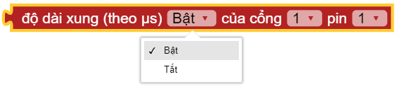
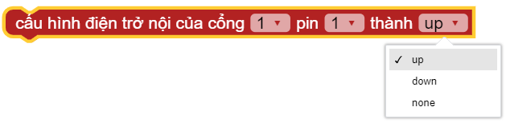

Pins¶
Chức năng chính các chân Pins
- pin[X][Y].write_digital((STATE))

Đổi trạng thái BẬT|TẮT của 1 PORT, trong đó:
Cổng: Có giá trị từ
1 ~ 6đại diện PORT 1 đến PORT 6 của xController.Pin: Có giá trị là
1|2tương ứng với tín hiệu 1 hoặc tín hiệu 2 đối với mỗi PORT. Đối với một số module thì mặc định là 1.STATE Có giá trị là
1hoặc0tương ứng với trạng thái TẮT|BẬT PORT.
- pin[X][Y].read_digital()

Trả về giá trị 0 hoặc 1, trong đó:
Cổng: Có giá trị từ
1 ~ 6đại diện PORT 1 đến PORT 6 của xController.Pin: Có giá trị là
1hoặc2tương ứng với tín hiệu 1 hoặc tín hiệu 2 đối với mỗi PORT. Đối với một số module thì mặc định là 1.
- pin11.write_analog(STATE)¶
{kind=link}
Đổi trạng thái BẬT|TẮT của 1 PORT, trong đó:
Cổng: Có giá trị từ
1 ~ 6đại diện PORT 1 đến PORT 6 của xController.Pin: Có giá trị là
1hoặc2tương ứng với tín hiệu 1 hoặc tín hiệu 2 đối với mỗi PORT. Đối với một số module thì mặc định là 1.STATE Có giá trị là
0 ~ 4095tương ứng mức điện áp0 ~ 3.3volt
- pin[X][Y].read_analog()
{kind=link}
Trả về giá trị 0 ~ 4095
Cổng: Có giá trị từ
4 ~ 6đại diện PORT 4 đến PORT 6 của xController.Pin: Có giá trị là
1hoặc2tương ứng với tín hiệu 1 hoặc tín hiệu 2 đối với mỗi PORT. Đối với một số module thì mặc định là 1.
- pin[X][Y].pulse_in(STATE)

{kind=link}
Trả về độ dài (tính theo micro giây) của một xung Bật hay Tắt phát ra từ chân cắm, trong đó:
Cổng: Có giá trị từ
1 ~ 6đại diện PORT 1 đến PORT 6 của xController.Pin: Có giá trị là
1hoặc2tương ứng với tín hiệu 1 hoặc tín hiệu 2 đối với mỗi PORT. Đối với một số module thì mặc định là 1.STATE Có giá trị là
0|1tương ứng với trạng tháiTẮT|BẬT.
- pin[X][Y].set_pull(MODE)

{kind=link}
Cấu hình điện nổi trở của chân cắm, trong đó:
Cổng: Có giá trị từ
1 ~ 6đại diện PORT 1 đến PORT 6 của xController.Pin: Có giá trị là
1hoặc2tương ứng với tín hiệu 1 hoặc tín hiệu 2 đối với mỗi PORT. Đối với một số module thì mặc định là 1.MODE Có các chế độ
uphoặcdownhoặcnone.
{kind=link}